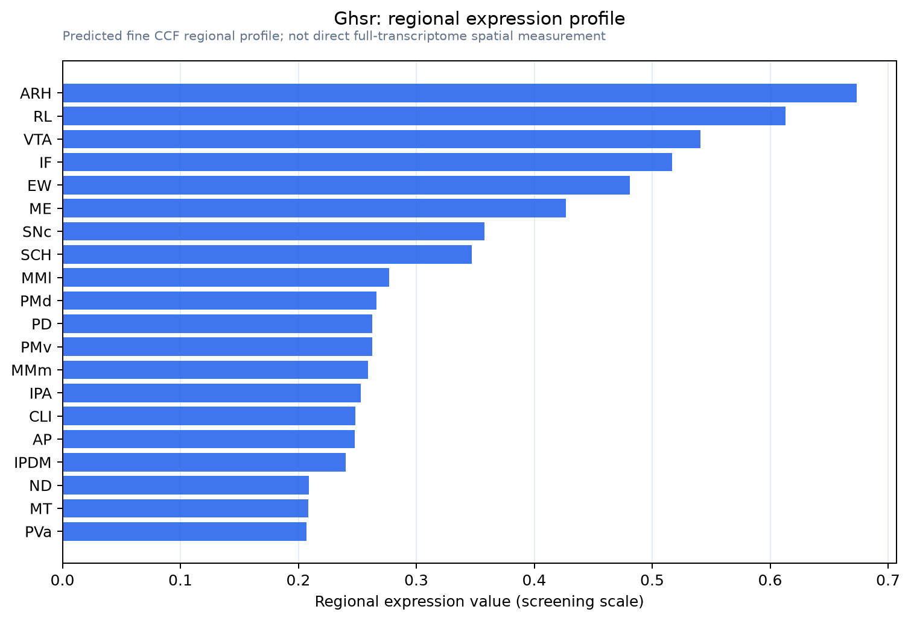

Ghsr
Growth hormone secretagogue receptor type 1 (GH-releasing peptide receptor) (Ghrelin receptor)
Spatial tier: RESTRICTED · Class: GPCR · Top region: ARH (Arcuate hypothalamic nucleus) · Positive regions: 27/554
45.5Discovery Score
38.0Targetability Score
CEvidence grade C
What this means: Ghsr: fine CCF profile is restricted toward ARH (top regions: ARH, RL, VTA, IF, EW; 27 positive regions); direct spatial validation is still required.
Direct spatial evidence
MERFISH REGION LOCATOR

Regional expression figure

Predicted WMB × fine-CCF profile; not direct full-transcriptome spatial measurement.
Spatial profile
Evidence and specificity
- Evidence status
- PREDICTED_FINE
- Direct sources
- None; predicted localization only
- Exclusive threshold
- 12 positive regions out of 554
- Spatial specificity
- 0.324
- Top-region fraction
- 0.055
- Filter status
- PASS
Interpretation limits
- Cell-type-to-region projection is imputed expression, not direct spatial measurement.
- Adult reference atlases do not establish stability across age, sex, strain, state, or disease.
- Transcript abundance does not guarantee protein abundance or genetic-tool performance.